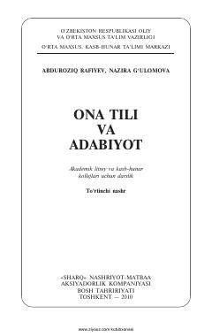

OTAkademik litsey va kasb-hunar kollejlari uchun ona tili va adabiyot darsligi.
Akademik litsey va kasb-hunar kollejlari o'quvchilari uchun mo'ljallangan ushbu darslik o'quvchilarning ona tili va adabiyot fanidan egallangan bilimlarini mustahkamlashga qaratilgan. Unda nutq madaniyati, so'z boyligini oshirish, imlo qoidalari va ijodiy yozma ishlar bo'yicha nazariy va amaliy materiallar berilgan.